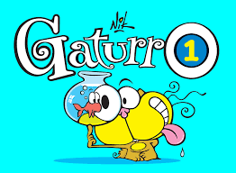

Los libros tienen un papel indispensable en la vida de las personas, pues les introduce en un mundo lleno de imaginación, además de que les proporciona conocimientos, permitiéndoles mejorar sus hábitos de lectura e impulsando sus habilidades de escritura, así como la expresión oral, etc.
| OBRAS | AUTOR | ÉPOCA |
|---|---|---|
| Don Quijote de La Mancha | Miguel de Cervantes | En 1605 |
| Gaturro | Nick | En 1993 |
| AMBAS EN WIKIPEDIA... | ||
| EL QUIJOTE... | GATURRO... | |

|
 | |
| SIMILITUDES = | ||
|
||